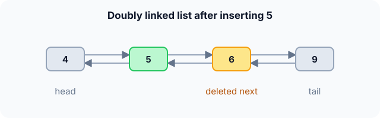

Prerequisites
- Singly linked list.
- Pointers and
NULL. - Drawing boxes and arrows for pointer changes.
The analogy
Everyday analogy
Think of a train: each carriage is coupled to the one in front and the one behind. You can walk through it in either direction.
To take out one carriage, you only need that carriage: uncouple it from its two neighbours and couple those neighbours together. A doubly linked list removes a node exactly the same way.
How it works
Start with a sequence of operations by hand
The list is 4 ⇄ 6 ⇄ 9; each node has prev and next. Predict which pointers change, then open "Check".
Example: predict before you read
Step 1. Insert 5 after 4. Predict: which existing pointers change?
Check
Two: 4.next now points to 5, and 6.prev now points to 5. The new node gets prev = 4, next = 6.
Step 2. Cover the next line and guess: walking backwards from 9, which values do you see?
Check
9, 6, 5, 4. The prev pointers make the backward walk as easy as the forward one.
Step 3. Delete node 6, given only a pointer to it. Predict the two pointer changes.
Check
5.next becomes 9 and 9.prev becomes 5. Node 6 is then freed: 4 ⇄ 5 ⇄ 9.

Quick recall: Before reading further, cover the text above and say out loud: why can a doubly linked list delete a node given only a pointer to it?
Check your answer
The node stores prev, so its predecessor is known without walking from the head.
Finish the picture: the ends of the list
Keep both head and tail. Work on 4 ⇄ 5 ⇄ 9.
- Delete the head, 4. Predict what changes.
Check
headbecomes 5, and5.prevbecomesNULL. No walk needed. - Delete the tail, 9. Predict the cost, and compare with a singly linked list.
Check
$O(1)$:
tailbecomes9.prev, which is 5. A singly linked list needs $O(n)$ here, because it must find the node before the tail.
Quick recall: Without scrolling up, say out loud: what are the four pointer writes when inserting between two nodes?
Check your answer
New node's prev and next, the left neighbour's next, and the right neighbour's prev.
The rule in plain words
Each node stores a value, prev and next. The first node's prev and the last node's next are NULL.
To insert or delete next to a node you hold, rewire the links on both sides. Check for NULL neighbours at the ends.
Quick recall: Before you read the code, write the steps of "delete node x" in your own words. Then check below.
Check your answer
1. Make x's previous node point forward to x's next node. 2. Make x's next node point back to x's previous node. 3. Free x, updating head or tail if x was at an end.
The code
Read this code after you have done the operations by hand. It will make more sense.
typedef struct Node { int val; struct Node *prev, *next; } Node;
void insert_after(Node *p, int v) { /* p must not be NULL */
Node *n = malloc(sizeof(Node));
n->val = v;
n->prev = p;
n->next = p->next;
if (p->next) p->next->prev = n; /* right neighbour points back */
p->next = n;
}Node *remove_node(Node *head, Node *x) { /* O(1): x knows its neighbours */
if (x->prev) x->prev->next = x->next;
else head = x->next; /* x was the head */
if (x->next) x->next->prev = x->prev;
free(x);
return head;
}Definition
What you just did, in one line: a doubly linked list is a chain of nodes where each node points to both its next and its previous node.
flowchart LR
A["4"] <--> B["5"]
B <--> C["6"]
C <--> D["9"]
How fast is it?
Quick recall: Before looking at the table, predict: does the extra prev pointer make search faster?
Check your answer
No. You still have to walk node by node to find a value: $O(n)$.
Memory is the price of the backward link. With values of $v$ bytes and pointers of $p$ bytes, $n$ nodes take:
$$n \cdot (v + 2p) \quad \text{versus} \quad n \cdot (v + p) \text{ for a singly linked list}$$On a 64-bit machine with 4-byte ints, that's about 20 bytes per node instead of 12 (before padding).
| Operation | Cost | Why |
|---|---|---|
| push_front / push_back (head and tail kept) | $O(1)$ | Ends are known directly |
| pop_front / pop_back | $O(1)$ | prev gives the new tail instantly |
| Insert after / before a known node | $O(1)$ | Four pointer writes |
| Delete a known node | $O(1)$ | The node knows both neighbours |
| Search / access $k$-th | $O(n)$ | Still walk node by node |
Warning
Order matters when inserting. If you set p->next = n before reading p->next into n->next, the old right neighbour is lost.
Exam tip
The classic contrast: deleting a node you hold is $O(1)$ in a doubly linked list but $O(n)$ in a singly linked one, because the singly linked node doesn't know its predecessor.
Common mistakes
- Updating only the
nextpointers and forgetting the matchingprevones. - Not handling the ends:
x->prevorx->nextmay beNULL. - Overwriting
p->nextbefore using it to set the new node'snext.
Try it yourself
Exercise 1 (warm-up)
Starting from 4 ⇄ 6 ⇄ 9, how many pointer writes does inserting 5 after 4 need in total?
Hint
Count the new node's two pointers plus the neighbours' pointers.
Answer
Four: 5.prev, 5.next, 4.next, 6.prev.
Exercise 2 (a bit harder)
A text editor keeps the cursor as a pointer into a doubly linked list of characters. What do "insert a character at the cursor" and "delete the character before the cursor" cost, and why would an array be worse? Write your answer down before you open it.
Show answer
Both are $O(1)$: rewire around the cursor's node. In an array, each insert or delete in the middle shifts all later characters, $O(n)$ per keystroke.
Did you know?
Did you know?
Browser history, LRU caches and music playlists with "previous" and "next" buttons are classic doubly linked lists.
Java's LinkedList and C++'s std::list are both doubly linked, so this is the structure you get when you ask a library for "a linked list".
Key points to remember
If you remember one thing from each line, remember the because.
- Deleting a known node is $O(1)$ because it stores pointers to both neighbours.
- pop_back is $O(1)$ because the tail's
prevgives the new tail without walking. - Every insert writes four pointers because each link exists in both directions.
- Search is still $O(n)$ because extra links don't give an address formula.
- It uses more memory because each node carries a second pointer.
Self-check questions
Answer these in order, out loud. They follow the page, so your answers become the script of your video.
- How is a doubly linked list like a train?
Sample answer
Each carriage is coupled to the one in front and the one behind, so you can walk either way and remove a carriage by joining its two neighbours.
- Walk through inserting 5 after 4 in 4 ⇄ 6 ⇄ 9.
Sample answer
The new node gets prev = 4 and next = 6; then 6.prev = 5 and 4.next = 5, giving 4 ⇄ 5 ⇄ 6 ⇄ 9.
- Why does
insert_aftersetn->next = p->nextbefore changingp->next?A good answer says what would be lost.
Sample answer
Once
p->nextis overwritten, the old right neighbour can no longer be reached, so it must be copied into the new node first. - So what is a doubly linked list, in one sentence?
Sample answer
A chain of nodes where each node points to both its next and its previous node.
- Why is deleting a known node $O(1)$ here but $O(n)$ in a singly linked list?
A good answer names the missing information.
Sample answer
Deletion must change the predecessor's
next. A doubly linked node stores its predecessor; a singly linked node doesn't, so you'd have to walk from the head to find it. - What do the main operations cost?
Sample answer
Push and pop at both ends, insert next to a known node and delete a known node are all $O(1)$; search and access by position are $O(n)$.
- When is the extra memory not worth it?
Sample answer
When you only ever add and remove at the front or only walk forward, as in a simple stack; a singly linked list does that with less memory.
- If you had to teach this to a friend in 2 minutes, what would you leave out, and why?
Sample answer
I'd leave out the memory formula and the order-of-writes detail. I'd keep the train analogy, the insert and delete pictures, and "$O(1)$ delete of a known node, costs an extra pointer".
External resources
- VisuAlgo: Linked list: choose "Doubly Linked List" and animate inserts and removals.
- GeeksforGeeks: Doubly linked list: operations with code and diagrams.
- Wikipedia: Doubly linked list: variants, sentinels and circular versions.
Videos
- YouTube search: doubly linked list explained: pick a walkthrough of insert and delete.